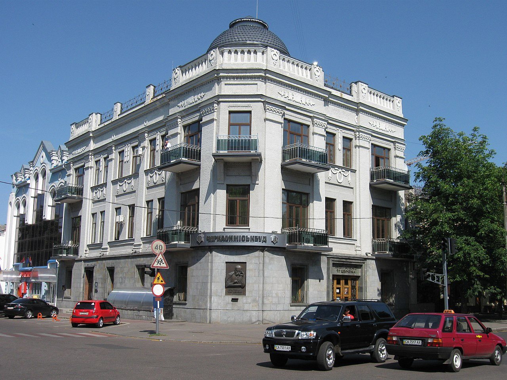
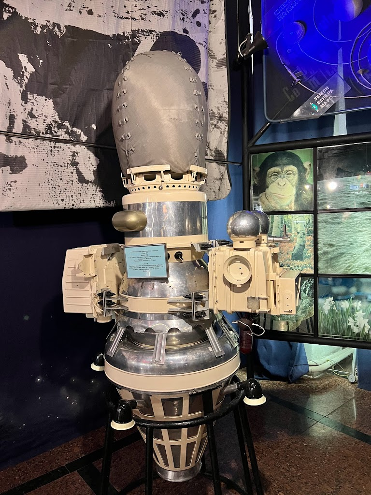
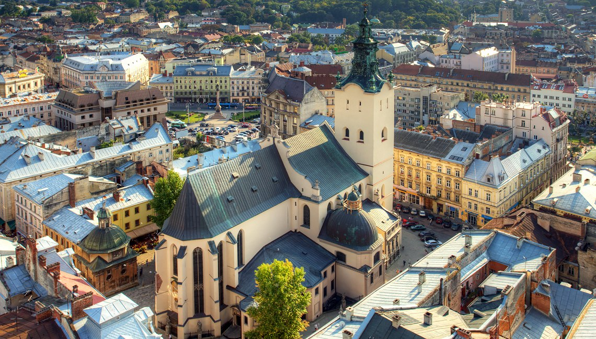

НазваКомпанії |
|||||
|---|---|---|---|---|---|
|  |
Новий тур - Черкаси!7.11.2024 Наш новий тур подарує вам знайомство з багатою культурною спадщиною та унікальними природними перлинами цього регіону. Ви відвідаєте історичний парк "Сосновий бір", Шевченківський будинок-музей та загадкову Чигиринщину, де оживає історія козацтва. Тур включає екскурсії, комфортний трансфер і час для прогулянок набережною Дніпра. Приєднуйтесь до нас, щоб побачити Черкаси з нового ракурсу і відчути їхній неповторний шарм! |
|
|||
|

|
Новий бюджетний тур - Житомир!24.10.2024 Наш новий бюджетний тур ідеально підходить для тих, хто хоче провести незабутній день, не витрачаючи великих коштів. Ви відвідаєте старовинний Кафедральний собор Святої Софії, музей космонавтики імені Сергія Корольова та насолодитеся прогулянкою мальовничими берегами річки Тетерів. Вартість туру включає проїзд, екскурсійний супровід і приємний бонус – дегустацію місцевих смаколиків. Подорожуйте вигідно та яскраво разом із нами! |
||||
|  |
Львів: місто легенд і ароматної кави15.10.2024 Запрошуємо вас у незабутній тур до культурної столиці України, де серед вузьких брукованих вуличок оживають легенди. Ви відвідаєте відомі архітектурні шедеври, такі як Оперний театр, Латинський кафедральний собор і Високий замок, а також насолодитеся ароматом справжньої львівської кави. Тур включає захопливі екскурсії, час для шопінгу у сувенірних крамничках і знайомство з гастрономічними родзинками міста. Пориньте у магію Львова разом із нами! |
||||